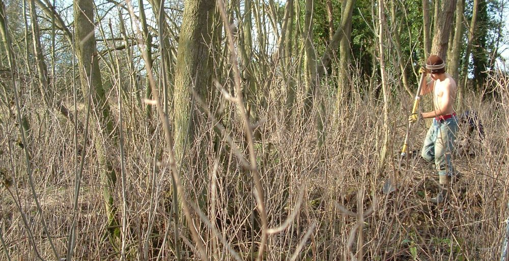

|

The shortest day has been and gone. No-one seems to have noticed. It was on
Wednesday. This is good news as it is already getting lighter and spring is on
the way. bad news though if you have been slack at the trails. Digging season is
already about half gone. In the winter you all moan that you want the summer and
in the summer you want the winter. Just be happy with what it is at the time,
and make the most of it. That means using a spade for the next 3 months.Some
girl from Girls Aloud was talking about chicken on the radio today. I guess we
all try and ignore this stuff as it makes you feel uncomfortable, but I don't
really want to eat this chicken when you see how they live. Read more if you are
brave:
Guardian,
eatMANIFESTO,
Viva.
previous |
enter website |